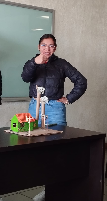
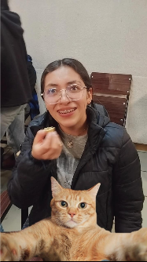
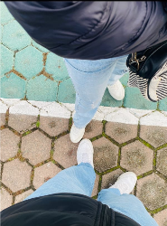
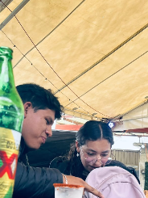
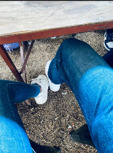
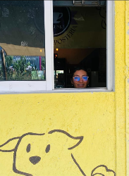
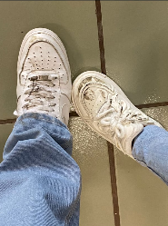
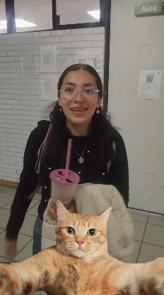
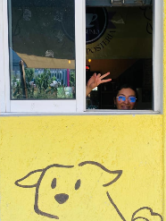

Para Ratitaaa
Abreme
Para Ratitaaa
El problema no fue que yo tomara las fotos, sino que andabas en la lela

dale click para ver la siguiente foto
Ese azulito te animo a entrar a la Santa nuevamente

dale click para ver la siguiente foto
La verdadera primera foto que tenemos jajajaja

dale click para ver la siguiente foto
Todo que ver la gorra JAJAJA
Pocas fotos, recuerdos bastanteees









Mensajes que si o si quiero que tomes muy en cuenta por favor
✦
✦
✦
✦
✦
para Andy
¡Tócame!
Ya se que te tengo arto con lo mismo pero...